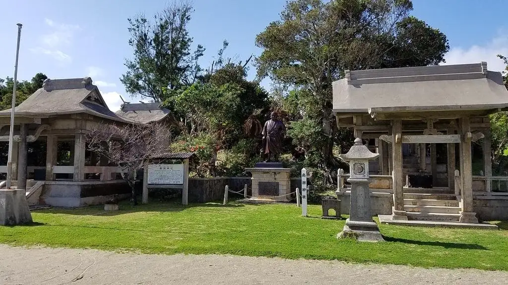
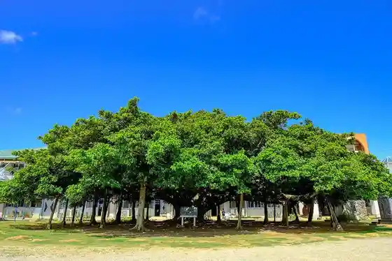
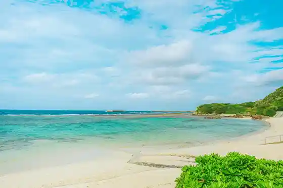
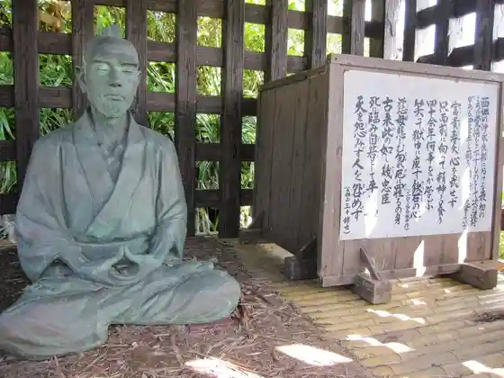

Japan / Kagoshima / Wadomari
Wadomari
Wadomari · Kagoshima
Wadomari
Highlighted on the Kagoshima map.

Sights
Nippon'ichi no Gajumaru
Wadomari, Kagoshima · 0997-84-3512 · Official / source link

Wanjo Beach
Wadomari, Kagoshima · 0997-92-1111 · Official / source link

Taraso Oki no Erabu
Wadomari, Kagoshima · 0997-92-3002 · Official / source link
Saigo Nanshu Memorial Museum
Wadomari, Kagoshima · 0997-92-0999 · Official / source link

Kasaishi Seaside Park
Wadomari, Kagoshima · 0997-84-3512 · Official / source link
Fucha (Shiofuki Cave)
Wadomari, Kagoshima · 0997-84-3512 · Official / source link
Umigamebyupointo
Wadomari, Kagoshima · Official / source link
Nanshu Shrine (Wadomari)
Wadomari, Kagoshima · 0997-92-0999 · Official / source link
Hanzaki
Wadomari, Kagoshima · Official / source link
Yo Yuki Shu no Haka
Wadomari, Kagoshima · 0997-92-1111 · Official / source link
Higashi Mango Sono
Wadomari, Kagoshima · 090-7159-4053 · Official / source link
Sotetsujanguru
Wadomari, Kagoshima · Official / source link
Nangoku Ki no Ko En
Wadomari, Kagoshima · 0997-92-3537 · Official / source link